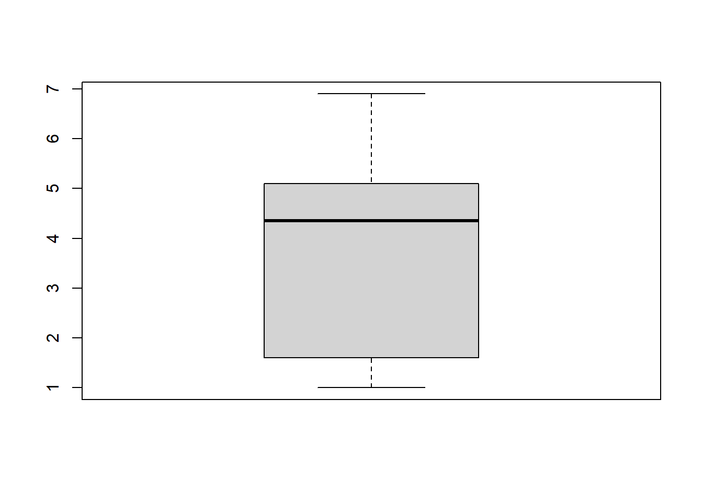
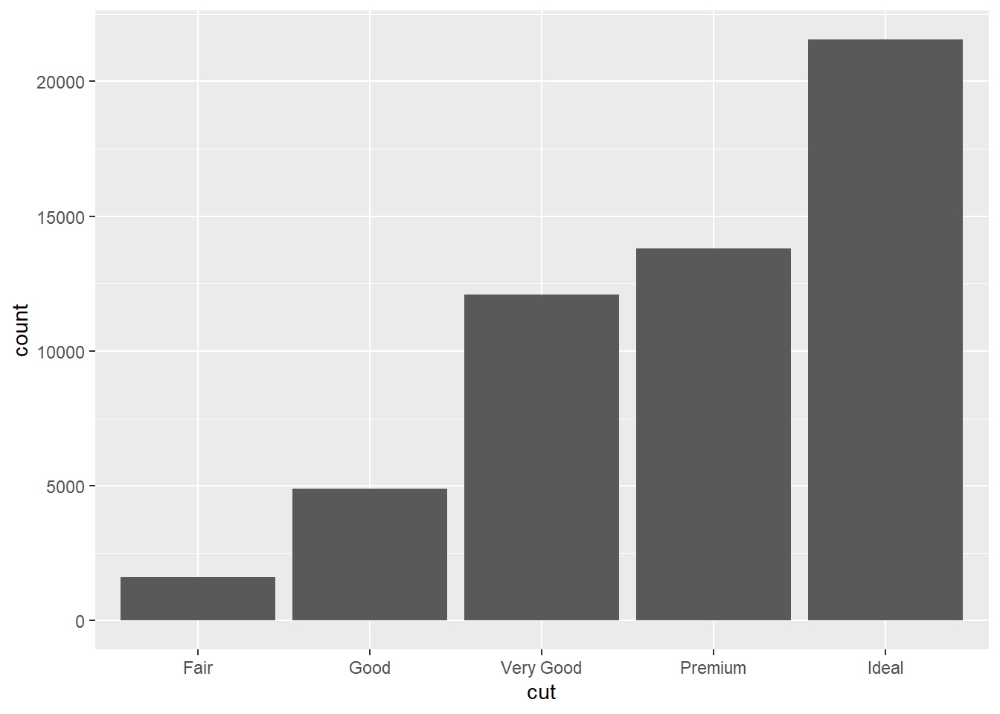
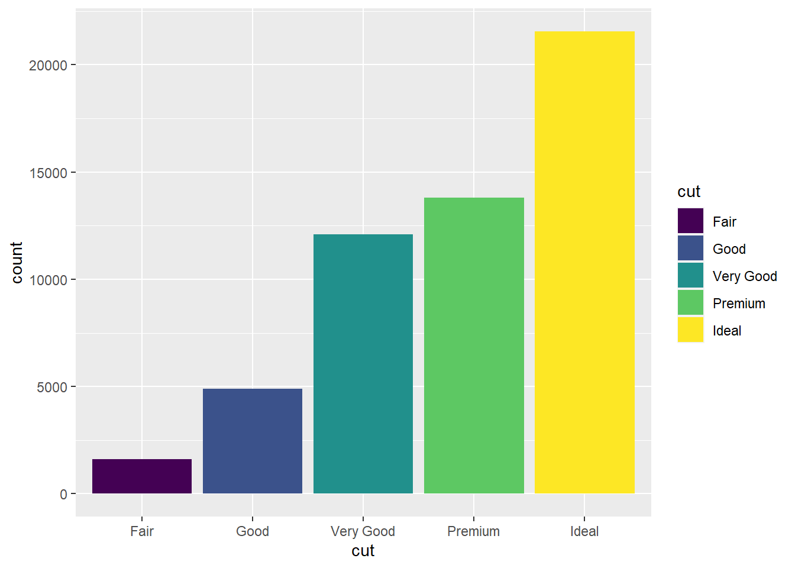
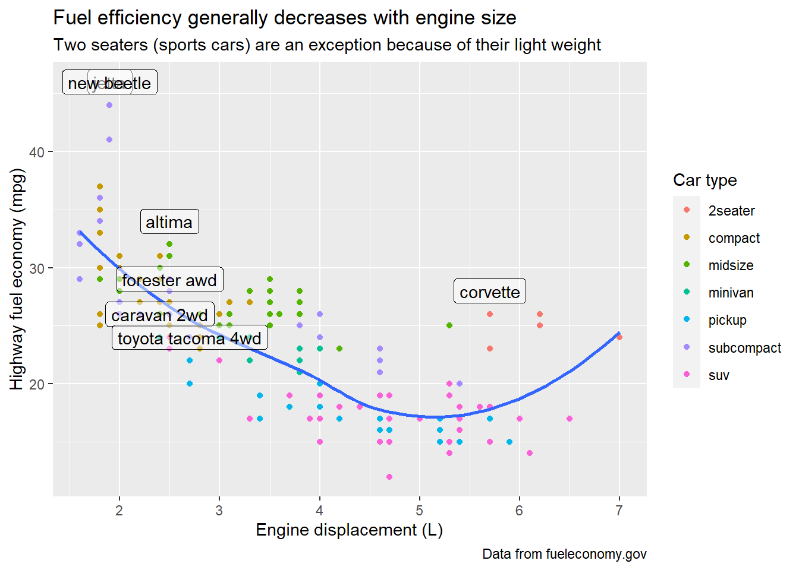

<!DOCTYPE html>
<html lang="es" xml:lang="es">
<head>

  <meta charset="utf-8" />
  <meta http-equiv="X-UA-Compatible" content="IE=edge" />
  <title>Capítulo 3 Gráficos - Parte I | Ciencia de Datos</title>
  <meta name="description" content="BCRA" />
  <meta name="generator" content="bookdown 0.33 and GitBook 2.6.7" />

  <meta property="og:title" content="Capítulo 3 Gráficos - Parte I | Ciencia de Datos" />
  <meta property="og:type" content="book" />
  
  <meta property="og:description" content="BCRA" />
  <meta name="github-repo" content="msangia/msangia.github" />

  <meta name="twitter:card" content="summary" />
  <meta name="twitter:title" content="Capítulo 3 Gráficos - Parte I | Ciencia de Datos" />
  <meta name="twitter:site" content="@msangia" />
  <meta name="twitter:description" content="BCRA" />
  

<meta name="author" content="Máximo Sangiácomo" />


  <meta name="viewport" content="width=device-width, initial-scale=1" />
  <meta name="apple-mobile-web-app-capable" content="yes" />
  <meta name="apple-mobile-web-app-status-bar-style" content="black" />
  
  
<link rel="prev" href="bd.html"/>
<link rel="next" href="gph2.html"/>
<script src="libs/jquery-3.6.0/jquery-3.6.0.min.js"></script>
<script src="https://cdn.jsdelivr.net/npm/fuse.js@6.4.6/dist/fuse.min.js"></script>
<link href="libs/gitbook-2.6.7/css/style.css" rel="stylesheet" />
<link href="libs/gitbook-2.6.7/css/plugin-table.css" rel="stylesheet" />
<link href="libs/gitbook-2.6.7/css/plugin-bookdown.css" rel="stylesheet" />
<link href="libs/gitbook-2.6.7/css/plugin-highlight.css" rel="stylesheet" />
<link href="libs/gitbook-2.6.7/css/plugin-search.css" rel="stylesheet" />
<link href="libs/gitbook-2.6.7/css/plugin-fontsettings.css" rel="stylesheet" />
<link href="libs/gitbook-2.6.7/css/plugin-clipboard.css" rel="stylesheet" />


<link href="libs/anchor-sections-1.1.0/anchor-sections.css" rel="stylesheet" />
<link href="libs/anchor-sections-1.1.0/anchor-sections-hash.css" rel="stylesheet" />
<script src="libs/anchor-sections-1.1.0/anchor-sections.js"></script>
<html>
  <head>
	<link rel="shortcut icon" href="images/favicon.png" />
  </head>
  <body>
  </body>
</html>


<style type="text/css">
pre > code.sourceCode { white-space: pre; position: relative; }
pre > code.sourceCode > span { display: inline-block; line-height: 1.25; }
pre > code.sourceCode > span:empty { height: 1.2em; }
.sourceCode { overflow: visible; }
code.sourceCode > span { color: inherit; text-decoration: inherit; }
pre.sourceCode { margin: 0; }
@media screen {
div.sourceCode { overflow: auto; }
}
@media print {
pre > code.sourceCode { white-space: pre-wrap; }
pre > code.sourceCode > span { text-indent: -5em; padding-left: 5em; }
}
pre.numberSource code
  { counter-reset: source-line 0; }
pre.numberSource code > span
  { position: relative; left: -4em; counter-increment: source-line; }
pre.numberSource code > span > a:first-child::before
  { content: counter(source-line);
    position: relative; left: -1em; text-align: right; vertical-align: baseline;
    border: none; display: inline-block;
    -webkit-touch-callout: none; -webkit-user-select: none;
    -khtml-user-select: none; -moz-user-select: none;
    -ms-user-select: none; user-select: none;
    padding: 0 4px; width: 4em;
    color: #aaaaaa;
  }
pre.numberSource { margin-left: 3em; border-left: 1px solid #aaaaaa;  padding-left: 4px; }
div.sourceCode
  {   }
@media screen {
pre > code.sourceCode > span > a:first-child::before { text-decoration: underline; }
}
code span.al { color: #ff0000; font-weight: bold; } /* Alert */
code span.an { color: #60a0b0; font-weight: bold; font-style: italic; } /* Annotation */
code span.at { color: #7d9029; } /* Attribute */
code span.bn { color: #40a070; } /* BaseN */
code span.bu { } /* BuiltIn */
code span.cf { color: #007020; font-weight: bold; } /* ControlFlow */
code span.ch { color: #4070a0; } /* Char */
code span.cn { color: #880000; } /* Constant */
code span.co { color: #60a0b0; font-style: italic; } /* Comment */
code span.cv { color: #60a0b0; font-weight: bold; font-style: italic; } /* CommentVar */
code span.do { color: #ba2121; font-style: italic; } /* Documentation */
code span.dt { color: #902000; } /* DataType */
code span.dv { color: #40a070; } /* DecVal */
code span.er { color: #ff0000; font-weight: bold; } /* Error */
code span.ex { } /* Extension */
code span.fl { color: #40a070; } /* Float */
code span.fu { color: #06287e; } /* Function */
code span.im { } /* Import */
code span.in { color: #60a0b0; font-weight: bold; font-style: italic; } /* Information */
code span.kw { color: #007020; font-weight: bold; } /* Keyword */
code span.op { color: #666666; } /* Operator */
code span.ot { color: #007020; } /* Other */
code span.pp { color: #bc7a00; } /* Preprocessor */
code span.sc { color: #4070a0; } /* SpecialChar */
code span.ss { color: #bb6688; } /* SpecialString */
code span.st { color: #4070a0; } /* String */
code span.va { color: #19177c; } /* Variable */
code span.vs { color: #4070a0; } /* VerbatimString */
code span.wa { color: #60a0b0; font-weight: bold; font-style: italic; } /* Warning */
</style>

<style type="text/css">
/* Used with Pandoc 2.11+ new --citeproc when CSL is used */
div.csl-bib-body { }
div.csl-entry {
  clear: both;
}
.hanging div.csl-entry {
  margin-left:2em;
  text-indent:-2em;
}
div.csl-left-margin {
  min-width:2em;
  float:left;
}
div.csl-right-inline {
  margin-left:2em;
  padding-left:1em;
}
div.csl-indent {
  margin-left: 2em;
}
</style>

<link rel="stylesheet" href="css/style.css" type="text/css" />
<link rel="stylesheet" href="css/r4ds.css" type="text/css" />
</head>

<body>


  <div class="book without-animation with-summary font-size-2 font-family-1" data-basepath=".">

    <div class="book-summary">
      <nav role="navigation">

<ul class="summary">
<li><a href="./">Ciencia de Datos - BCRA</a></li>

<li class="divider"></li>
<li class="chapter" data-level="" data-path="index.html"><a href="index.html"><i class="fa fa-check"></i>Descripcion del curso</a></li>
<li class="chapter" data-level="1" data-path="intro.html"><a href="intro.html"><i class="fa fa-check"></i><b>1</b> Introduccion a R</a>
<ul>
<li class="chapter" data-level="1.1" data-path="intro.html"><a href="intro.html#primeros-pasos"><i class="fa fa-check"></i><b>1.1</b> Primeros pasos</a></li>
<li class="chapter" data-level="1.2" data-path="intro.html"><a href="intro.html#busacar-ayuda"><i class="fa fa-check"></i><b>1.2</b> Busacar ayuda</a></li>
<li class="chapter" data-level="1.3" data-path="intro.html"><a href="intro.html#tipos-de-datos"><i class="fa fa-check"></i><b>1.3</b> Tipos de datos</a></li>
<li class="chapter" data-level="1.4" data-path="intro.html"><a href="intro.html#limpieza-de-memoria"><i class="fa fa-check"></i><b>1.4</b> Limpieza de memoria</a></li>
<li class="chapter" data-level="1.5" data-path="intro.html"><a href="intro.html#asignación-de-valores"><i class="fa fa-check"></i><b>1.5</b> Asignación de valores</a></li>
<li class="chapter" data-level="1.6" data-path="intro.html"><a href="intro.html#operadores-aritméticos"><i class="fa fa-check"></i><b>1.6</b> Operadores aritméticos</a></li>
<li class="chapter" data-level="1.7" data-path="intro.html"><a href="intro.html#operadores-relacionales"><i class="fa fa-check"></i><b>1.7</b> Operadores relacionales</a></li>
<li class="chapter" data-level="1.8" data-path="intro.html"><a href="intro.html#operadores-lógicos"><i class="fa fa-check"></i><b>1.8</b> Operadores lógicos</a></li>
<li class="chapter" data-level="1.9" data-path="intro.html"><a href="intro.html#vectores"><i class="fa fa-check"></i><b>1.9</b> Vectores</a></li>
<li class="chapter" data-level="1.10" data-path="intro.html"><a href="intro.html#secuencias"><i class="fa fa-check"></i><b>1.10</b> Secuencias</a></li>
<li class="chapter" data-level="1.11" data-path="intro.html"><a href="intro.html#factores"><i class="fa fa-check"></i><b>1.11</b> Factores</a></li>
<li class="chapter" data-level="1.12" data-path="intro.html"><a href="intro.html#matrices"><i class="fa fa-check"></i><b>1.12</b> Matrices</a></li>
<li class="chapter" data-level="1.13" data-path="intro.html"><a href="intro.html#listas"><i class="fa fa-check"></i><b>1.13</b> Listas</a></li>
<li class="chapter" data-level="1.14" data-path="intro.html"><a href="intro.html#data-frames"><i class="fa fa-check"></i><b>1.14</b> Data frames</a></li>
<li class="chapter" data-level="1.15" data-path="intro.html"><a href="intro.html#r-base"><i class="fa fa-check"></i><b>1.15</b> R base</a></li>
<li class="chapter" data-level="1.16" data-path="intro.html"><a href="intro.html#apply-y-tapply"><i class="fa fa-check"></i><b>1.16</b> Apply y tapply</a></li>
<li class="chapter" data-level="1.17" data-path="intro.html"><a href="intro.html#map"><i class="fa fa-check"></i><b>1.17</b> Map</a></li>
<li class="chapter" data-level="1.18" data-path="intro.html"><a href="intro.html#loops"><i class="fa fa-check"></i><b>1.18</b> Loops</a></li>
<li class="chapter" data-level="1.19" data-path="intro.html"><a href="intro.html#condicionales"><i class="fa fa-check"></i><b>1.19</b> Condicionales</a></li>
<li class="chapter" data-level="1.20" data-path="intro.html"><a href="intro.html#funciones"><i class="fa fa-check"></i><b>1.20</b> Funciones</a>
<ul>
<li class="chapter" data-level="1.20.1" data-path="intro.html"><a href="intro.html#output-más-de-un-resultado"><i class="fa fa-check"></i><b>1.20.1</b> Output más de un resultado</a></li>
<li class="chapter" data-level="1.20.2" data-path="intro.html"><a href="intro.html#argumentos-con-valores-default"><i class="fa fa-check"></i><b>1.20.2</b> Argumentos con valores default</a></li>
</ul></li>
</ul></li>
<li class="chapter" data-level="2" data-path="bd.html"><a href="bd.html"><i class="fa fa-check"></i><b>2</b> Base de datos</a>
<ul>
<li class="chapter" data-level="2.1" data-path="bd.html"><a href="bd.html#directorio-de-trabajo"><i class="fa fa-check"></i><b>2.1</b> Directorio de trabajo</a></li>
<li class="chapter" data-level="2.2" data-path="bd.html"><a href="bd.html#cargar-datos"><i class="fa fa-check"></i><b>2.2</b> Cargar datos</a>
<ul>
<li class="chapter" data-level="2.2.1" data-path="bd.html"><a href="bd.html#ingrasar-datos-con-tidyverse"><i class="fa fa-check"></i><b>2.2.1</b> Ingrasar datos con <code>tidyverse</code></a></li>
<li class="chapter" data-level="2.2.2" data-path="bd.html"><a href="bd.html#bases-de-stata"><i class="fa fa-check"></i><b>2.2.2</b> Bases de Stata</a></li>
</ul></li>
<li class="chapter" data-level="2.3" data-path="bd.html"><a href="bd.html#problemas-de-imputación"><i class="fa fa-check"></i><b>2.3</b> Problemas de imputación</a></li>
<li class="chapter" data-level="2.4" data-path="bd.html"><a href="bd.html#exportar-datos"><i class="fa fa-check"></i><b>2.4</b> Exportar datos</a></li>
<li class="chapter" data-level="2.5" data-path="bd.html"><a href="bd.html#pipe"><i class="fa fa-check"></i><b>2.5</b> Pipe</a></li>
<li class="chapter" data-level="2.6" data-path="bd.html"><a href="bd.html#variables"><i class="fa fa-check"></i><b>2.6</b> Variables</a></li>
<li class="chapter" data-level="2.7" data-path="bd.html"><a href="bd.html#merge"><i class="fa fa-check"></i><b>2.7</b> Merge</a></li>
<li class="chapter" data-level="2.8" data-path="bd.html"><a href="bd.html#variables-group_by-mutate"><i class="fa fa-check"></i><b>2.8</b> Variables: group_by, mutate</a></li>
<li class="chapter" data-level="2.9" data-path="bd.html"><a href="bd.html#guardar-datos"><i class="fa fa-check"></i><b>2.9</b> Guardar datos</a></li>
<li class="chapter" data-level="2.10" data-path="bd.html"><a href="bd.html#valores-missing"><i class="fa fa-check"></i><b>2.10</b> Valores missing</a>
<ul>
<li class="chapter" data-level="2.10.1" data-path="bd.html"><a href="bd.html#eliminar-valores-missing"><i class="fa fa-check"></i><b>2.10.1</b> Eliminar valores missing</a></li>
</ul></li>
<li class="chapter" data-level="2.11" data-path="bd.html"><a href="bd.html#loop"><i class="fa fa-check"></i><b>2.11</b> Loop</a></li>
<li class="chapter" data-level="2.12" data-path="bd.html"><a href="bd.html#pivot-reshape"><i class="fa fa-check"></i><b>2.12</b> Pivot (Reshape)</a></li>
<li class="chapter" data-level="2.13" data-path="bd.html"><a href="bd.html#row-bind-append"><i class="fa fa-check"></i><b>2.13</b> Row bind (Append)</a></li>
<li class="chapter" data-level="2.14" data-path="bd.html"><a href="bd.html#strings"><i class="fa fa-check"></i><b>2.14</b> Strings</a></li>
<li class="chapter" data-level="2.15" data-path="bd.html"><a href="bd.html#fechas"><i class="fa fa-check"></i><b>2.15</b> Fechas</a>
<ul>
<li class="chapter" data-level="2.15.1" data-path="bd.html"><a href="bd.html#manipulación-de-fechas"><i class="fa fa-check"></i><b>2.15.1</b> Manipulación de fechas</a></li>
</ul></li>
<li class="chapter" data-level="2.16" data-path="bd.html"><a href="bd.html#análisis-de-datos"><i class="fa fa-check"></i><b>2.16</b> Análisis de datos</a>
<ul>
<li class="chapter" data-level="2.16.1" data-path="bd.html"><a href="bd.html#tablas"><i class="fa fa-check"></i><b>2.16.1</b> Tablas</a></li>
</ul></li>
<li class="chapter" data-level="2.17" data-path="bd.html"><a href="bd.html#group_by-summarise"><i class="fa fa-check"></i><b>2.17</b> group_by, summarise</a></li>
<li class="chapter" data-level="2.18" data-path="bd.html"><a href="bd.html#vector-de-resultados"><i class="fa fa-check"></i><b>2.18</b> Vector de resultados</a></li>
</ul></li>
<li class="chapter" data-level="3" data-path="gph1.html"><a href="gph1.html"><i class="fa fa-check"></i><b>3</b> Gráficos - Parte I</a>
<ul>
<li class="chapter" data-level="3.1" data-path="gph1.html"><a href="gph1.html#ggplot2"><i class="fa fa-check"></i><b>3.1</b> ggplot2</a></li>
<li class="chapter" data-level="3.2" data-path="gph1.html"><a href="gph1.html#estadísticas-con-ggplot2"><i class="fa fa-check"></i><b>3.2</b> Estadísticas con <code>ggplot2</code></a></li>
<li class="chapter" data-level="3.3" data-path="gph1.html"><a href="gph1.html#ggplot-position"><i class="fa fa-check"></i><b>3.3</b> GGPlot (position)</a></li>
<li class="chapter" data-level="3.4" data-path="gph1.html"><a href="gph1.html#time-series"><i class="fa fa-check"></i><b>3.4</b> Time series</a></li>
<li class="chapter" data-level="3.5" data-path="gph1.html"><a href="gph1.html#labels"><i class="fa fa-check"></i><b>3.5</b> Labels</a></li>
<li class="chapter" data-level="3.6" data-path="gph1.html"><a href="gph1.html#orden-de-factores-en-los-ejes-variables-string"><i class="fa fa-check"></i><b>3.6</b> Orden de factores en los ejes (variables string)</a></li>
<li class="chapter" data-level="3.7" data-path="gph1.html"><a href="gph1.html#guardar-un-gráfico"><i class="fa fa-check"></i><b>3.7</b> Guardar un gráfico</a></li>
</ul></li>
<li class="chapter" data-level="4" data-path="gph2.html"><a href="gph2.html"><i class="fa fa-check"></i><b>4</b> Gráficos - Parte II</a>
<ul>
<li class="chapter" data-level="4.1" data-path="gph2.html"><a href="gph2.html#títulos-en-los-ejes"><i class="fa fa-check"></i><b>4.1</b> Títulos en los ejes</a></li>
<li class="chapter" data-level="4.2" data-path="gph2.html"><a href="gph2.html#orden-de-los-graficos"><i class="fa fa-check"></i><b>4.2</b> Orden de los graficos</a></li>
<li class="chapter" data-level="4.3" data-path="gph2.html"><a href="gph2.html#agrandar-una-parte-del-grafico"><i class="fa fa-check"></i><b>4.3</b> Agrandar una parte del grafico</a></li>
<li class="chapter" data-level="4.4" data-path="gph2.html"><a href="gph2.html#escala-de-colores-manual"><i class="fa fa-check"></i><b>4.4</b> Escala de colores manual</a></li>
<li class="chapter" data-level="4.5" data-path="gph2.html"><a href="gph2.html#límites-epacios-y-etiquetas"><i class="fa fa-check"></i><b>4.5</b> Límites, epacios y etiquetas</a></li>
<li class="chapter" data-level="4.6" data-path="gph2.html"><a href="gph2.html#leyendas"><i class="fa fa-check"></i><b>4.6</b> Leyendas</a></li>
<li class="chapter" data-level="4.7" data-path="gph2.html"><a href="gph2.html#posición-de-la-leyenda"><i class="fa fa-check"></i><b>4.7</b> Posición de la leyenda</a></li>
<li class="chapter" data-level="4.8" data-path="gph2.html"><a href="gph2.html#estadísticas"><i class="fa fa-check"></i><b>4.8</b> Estadísticas</a></li>
<li class="chapter" data-level="4.9" data-path="gph2.html"><a href="gph2.html#unir-leyendas"><i class="fa fa-check"></i><b>4.9</b> Unir leyendas</a></li>
<li class="chapter" data-level="4.10" data-path="gph2.html"><a href="gph2.html#separar-leyendas"><i class="fa fa-check"></i><b>4.10</b> Separar leyendas</a></li>
<li class="chapter" data-level="4.11" data-path="gph2.html"><a href="gph2.html#agrupar-y-desagrupar"><i class="fa fa-check"></i><b>4.11</b> Agrupar y desagrupar</a></li>
<li class="chapter" data-level="4.12" data-path="gph2.html"><a href="gph2.html#themes"><i class="fa fa-check"></i><b>4.12</b> Themes</a></li>
</ul></li>
<li class="chapter" data-level="5" data-path="rmd.html"><a href="rmd.html"><i class="fa fa-check"></i><b>5</b> R Markdown</a>
<ul>
<li class="chapter" data-level="5.1" data-path="rmd.html"><a href="rmd.html#informes-con-r-markdown"><i class="fa fa-check"></i><b>5.1</b> Informes con R Markdown</a>
<ul>
<li class="chapter" data-level="5.1.1" data-path="rmd.html"><a href="rmd.html#intrormd"><i class="fa fa-check"></i><b>5.1.1</b> Introduccion</a></li>
<li class="chapter" data-level="5.1.2" data-path="rmd.html"><a href="rmd.html#referencias-cruzadas"><i class="fa fa-check"></i><b>5.1.2</b> Referencias cruzadas</a></li>
<li class="chapter" data-level="5.1.3" data-path="rmd.html"><a href="rmd.html#regresion"><i class="fa fa-check"></i><b>5.1.3</b> Regresion</a></li>
<li class="chapter" data-level="5.1.4" data-path="rmd.html"><a href="rmd.html#bullets"><i class="fa fa-check"></i><b>5.1.4</b> Bullets</a></li>
<li class="chapter" data-level="" data-path="rmd.html"><a href="rmd.html#bibliografia"><i class="fa fa-check"></i>Bibliografia</a></li>
</ul></li>
</ul></li>
<li class="chapter" data-level="6" data-path="conceptos.html"><a href="conceptos.html"><i class="fa fa-check"></i><b>6</b> Conceptos generales</a>
<ul>
<li class="chapter" data-level="6.1" data-path="conceptos.html"><a href="conceptos.html#estimacion"><i class="fa fa-check"></i><b>6.1</b> Estimacion</a></li>
<li class="chapter" data-level="6.2" data-path="conceptos.html"><a href="conceptos.html#prediccion"><i class="fa fa-check"></i><b>6.2</b> Prediccion</a></li>
<li class="chapter" data-level="6.3" data-path="conceptos.html"><a href="conceptos.html#inferencia"><i class="fa fa-check"></i><b>6.3</b> Inferencia</a></li>
<li class="chapter" data-level="6.4" data-path="conceptos.html"><a href="conceptos.html#metodos-parametricos"><i class="fa fa-check"></i><b>6.4</b> Metodos parametricos</a></li>
<li class="chapter" data-level="6.5" data-path="conceptos.html"><a href="conceptos.html#metodos-no-parametricos"><i class="fa fa-check"></i><b>6.5</b> Metodos no parametricos</a></li>
<li class="chapter" data-level="6.6" data-path="conceptos.html"><a href="conceptos.html#evaluacion-de-la-precision-del-modelo"><i class="fa fa-check"></i><b>6.6</b> Evaluacion de la precision del modelo</a>
<ul>
<li class="chapter" data-level="6.6.1" data-path="conceptos.html"><a href="conceptos.html#ajuste"><i class="fa fa-check"></i><b>6.6.1</b> Calidad del ajuste</a></li>
<li class="chapter" data-level="6.6.2" data-path="conceptos.html"><a href="conceptos.html#trade-off-sesgo-varianza"><i class="fa fa-check"></i><b>6.6.2</b> Trade-off Sesgo-Varianza</a></li>
<li class="chapter" data-level="6.6.3" data-path="conceptos.html"><a href="conceptos.html#clasificacion"><i class="fa fa-check"></i><b>6.6.3</b> Clasificacion</a></li>
<li class="chapter" data-level="6.6.4" data-path="conceptos.html"><a href="conceptos.html#confusion"><i class="fa fa-check"></i><b>6.6.4</b> Matriz de confusion</a></li>
<li class="chapter" data-level="6.6.5" data-path="conceptos.html"><a href="conceptos.html#roc"><i class="fa fa-check"></i><b>6.6.5</b> Curva ROC</a></li>
</ul></li>
<li class="chapter" data-level="6.7" data-path="conceptos.html"><a href="conceptos.html#resampling-methods"><i class="fa fa-check"></i><b>6.7</b> Resampling Methods</a>
<ul>
<li class="chapter" data-level="6.7.1" data-path="conceptos.html"><a href="conceptos.html#cv"><i class="fa fa-check"></i><b>6.7.1</b> Cross Validation</a></li>
<li class="chapter" data-level="6.7.2" data-path="conceptos.html"><a href="conceptos.html#bootstrap"><i class="fa fa-check"></i><b>6.7.2</b> Bootstrap</a></li>
</ul></li>
<li class="chapter" data-level="6.8" data-path="conceptos.html"><a href="conceptos.html#resumen"><i class="fa fa-check"></i><b>6.8</b> Resumen</a></li>
</ul></li>
<li class="chapter" data-level="7" data-path="mco.html"><a href="mco.html"><i class="fa fa-check"></i><b>7</b> Regresion lineal</a>
<ul>
<li class="chapter" data-level="7.1" data-path="mco.html"><a href="mco.html#relacion-entre-estimacion-optima-y-prediccion-optima"><i class="fa fa-check"></i><b>7.1</b> Relacion entre estimacion optima y prediccion optima</a></li>
<li class="chapter" data-level="7.2" data-path="mco.html"><a href="mco.html#aplicacion-practica"><i class="fa fa-check"></i><b>7.2</b> Aplicacion practica</a></li>
</ul></li>
<li class="chapter" data-level="8" data-path="shrinkage-methods.html"><a href="shrinkage-methods.html"><i class="fa fa-check"></i><b>8</b> Shrinkage Methods</a>
<ul>
<li class="chapter" data-level="8.1" data-path="shrinkage-methods.html"><a href="shrinkage-methods.html#lasso"><i class="fa fa-check"></i><b>8.1</b> LASSO</a></li>
<li class="chapter" data-level="8.2" data-path="shrinkage-methods.html"><a href="shrinkage-methods.html#ridge"><i class="fa fa-check"></i><b>8.2</b> <em>Ridge</em></a></li>
<li class="chapter" data-level="8.3" data-path="shrinkage-methods.html"><a href="shrinkage-methods.html#aplicacion-practica-1"><i class="fa fa-check"></i><b>8.3</b> Aplicacion practica</a></li>
</ul></li>
<li class="chapter" data-level="9" data-path="logit.html"><a href="logit.html"><i class="fa fa-check"></i><b>9</b> Logit</a>
<ul>
<li class="chapter" data-level="9.1" data-path="logit.html"><a href="logit.html#modelo-logit"><i class="fa fa-check"></i><b>9.1</b> Modelo <em>logit</em></a>
<ul>
<li class="chapter" data-level="9.1.1" data-path="logit.html"><a href="logit.html#interpretacion-de-coeficientes-en-el-modelo-logit"><i class="fa fa-check"></i><b>9.1.1</b> Interpretacion de coeficientes en el modelo <em>logit</em></a></li>
</ul></li>
<li class="chapter" data-level="9.2" data-path="logit.html"><a href="logit.html#aplicacion-practica-2"><i class="fa fa-check"></i><b>9.2</b> Aplicacion practica</a></li>
</ul></li>
<li class="chapter" data-level="10" data-path="arboles.html"><a href="arboles.html"><i class="fa fa-check"></i><b>10</b> Arboles de decision</a>
<ul>
<li class="chapter" data-level="10.1" data-path="arboles.html"><a href="arboles.html#classification-and-regression-tree-cart"><i class="fa fa-check"></i><b>10.1</b> <em>Classification and Regression Tree</em> (CART)</a></li>
<li class="chapter" data-level="10.2" data-path="arboles.html"><a href="arboles.html#bagging"><i class="fa fa-check"></i><b>10.2</b> Bagging</a></li>
<li class="chapter" data-level="10.3" data-path="arboles.html"><a href="arboles.html#random-forest"><i class="fa fa-check"></i><b>10.3</b> Random Forest</a></li>
<li class="chapter" data-level="10.4" data-path="arboles.html"><a href="arboles.html#boosting"><i class="fa fa-check"></i><b>10.4</b> Boosting</a>
<ul>
<li class="chapter" data-level="10.4.1" data-path="arboles.html"><a href="arboles.html#ada-boost"><i class="fa fa-check"></i><b>10.4.1</b> Ada Boost</a></li>
</ul></li>
<li class="chapter" data-level="10.5" data-path="arboles.html"><a href="arboles.html#aplicacion-practica-3"><i class="fa fa-check"></i><b>10.5</b> Aplicacion practica</a>
<ul>
<li class="chapter" data-level="10.5.1" data-path="arboles.html"><a href="arboles.html#arboles-de-clasificacion"><i class="fa fa-check"></i><b>10.5.1</b> Arboles de clasificacion</a></li>
<li class="chapter" data-level="10.5.2" data-path="arboles.html"><a href="arboles.html#compara"><i class="fa fa-check"></i><b>10.5.2</b> Comparacion de modelos para clasificacion</a></li>
<li class="chapter" data-level="10.5.3" data-path="arboles.html"><a href="arboles.html#grid-search"><i class="fa fa-check"></i><b>10.5.3</b> Grid search</a></li>
<li class="chapter" data-level="10.5.4" data-path="arboles.html"><a href="arboles.html#arboles-de-regresion"><i class="fa fa-check"></i><b>10.5.4</b> Arboles de regresion</a></li>
<li class="chapter" data-level="10.5.5" data-path="arboles.html"><a href="arboles.html#bagging-y-random-forests"><i class="fa fa-check"></i><b>10.5.5</b> Bagging y Random Forests</a></li>
<li class="chapter" data-level="10.5.6" data-path="arboles.html"><a href="arboles.html#boosting-1"><i class="fa fa-check"></i><b>10.5.6</b> Boosting</a></li>
</ul></li>
</ul></li>
<li class="chapter" data-level="11" data-path="nnet.html"><a href="nnet.html"><i class="fa fa-check"></i><b>11</b> Neural Networks</a>
<ul>
<li class="chapter" data-level="11.1" data-path="nnet.html"><a href="nnet.html#single-layer-neural-networks"><i class="fa fa-check"></i><b>11.1</b> Single Layer Neural Networks</a></li>
</ul></li>
<li class="chapter" data-level="12" data-path="cluster.html"><a href="cluster.html"><i class="fa fa-check"></i><b>12</b> Analisis de clusters</a>
<ul>
<li class="chapter" data-level="12.1" data-path="cluster.html"><a href="cluster.html#k-means-clustering"><i class="fa fa-check"></i><b>12.1</b> K-Means Clustering</a></li>
<li class="chapter" data-level="12.2" data-path="cluster.html"><a href="cluster.html#aplicacion-practica-4"><i class="fa fa-check"></i><b>12.2</b> Aplicacion practica</a></li>
</ul></li>
<li class="chapter" data-level="" data-path="bibliografia-1.html"><a href="bibliografia-1.html"><i class="fa fa-check"></i>Bibliografia</a></li>
<li class="divider"></li>
<li><a href="./" target="blank">Maximo Sangiacomo - GMyP</a></li>

</ul>

      </nav>
    </div>

    <div class="book-body">
      <div class="body-inner">
        <div class="book-header" role="navigation">
          <h1>
            <i class="fa fa-circle-o-notch fa-spin"></i><a href="./">Ciencia de Datos</a>
          </h1>
        </div>

        <div class="page-wrapper" tabindex="-1" role="main">
          <div class="page-inner">

            <section class="normal" id="section-">
<link href="css/style.css" rel="stylesheet">
<div class="hero-image-container"> 
  
</div>
<div id="gph1" class="section level1 hasAnchor" number="3">
<h1><span class="header-section-number">Capítulo 3</span> Gráficos - Parte I<a href="gph1.html#gph1" class="anchor-section" aria-label="Anchor link to header"></a></h1>
<p><code>R</code> base dispone de comandos para realizar gráficos sencillos que muchas veces resulta útil cuando estamos trabajando y queremos realizar alguna visualización rápida.</p>
<div class="sourceCode" id="cb350"><pre class="sourceCode r"><code class="sourceCode r"><span id="cb350-1"><a href="gph1.html#cb350-1" aria-hidden="true" tabindex="-1"></a><span class="fu">data</span>(iris)</span>
<span id="cb350-2"><a href="gph1.html#cb350-2" aria-hidden="true" tabindex="-1"></a><span class="fu">str</span>(iris)</span></code></pre></div>
<pre><code>## &#39;data.frame&#39;:    150 obs. of  5 variables:
##  $ Sepal.Length: num  5.1 4.9 4.7 4.6 5 5.4 4.6 5 4.4 4.9 ...
##  $ Sepal.Width : num  3.5 3 3.2 3.1 3.6 3.9 3.4 3.4 2.9 3.1 ...
##  $ Petal.Length: num  1.4 1.4 1.3 1.5 1.4 1.7 1.4 1.5 1.4 1.5 ...
##  $ Petal.Width : num  0.2 0.2 0.2 0.2 0.2 0.4 0.3 0.2 0.2 0.1 ...
##  $ Species     : Factor w/ 3 levels &quot;setosa&quot;,&quot;versicolor&quot;,..: 1 1 1 1 1 1 1 1 1 1 ...</code></pre>
<div class="sourceCode" id="cb352"><pre class="sourceCode r"><code class="sourceCode r"><span id="cb352-1"><a href="gph1.html#cb352-1" aria-hidden="true" tabindex="-1"></a><span class="fu">names</span>(iris)</span></code></pre></div>
<pre><code>## [1] &quot;Sepal.Length&quot; &quot;Sepal.Width&quot;  &quot;Petal.Length&quot; &quot;Petal.Width&quot;  &quot;Species&quot;</code></pre>
<div class="sourceCode" id="cb354"><pre class="sourceCode r"><code class="sourceCode r"><span id="cb354-1"><a href="gph1.html#cb354-1" aria-hidden="true" tabindex="-1"></a><span class="fu">attach</span>(iris) <span class="co"># Permite usar nombre de varaibles sin anteponer nombre de la base de datos</span></span>
<span id="cb354-2"><a href="gph1.html#cb354-2" aria-hidden="true" tabindex="-1"></a></span>
<span id="cb354-3"><a href="gph1.html#cb354-3" aria-hidden="true" tabindex="-1"></a><span class="co"># Igual que en Clase 01 pero mas estadisticas</span></span>
<span id="cb354-4"><a href="gph1.html#cb354-4" aria-hidden="true" tabindex="-1"></a><span class="fu">tapply</span>(Petal.Length, Species, summary)</span></code></pre></div>
<pre><code>## $setosa
##    Min. 1st Qu.  Median    Mean 3rd Qu.    Max. 
##   1.000   1.400   1.500   1.462   1.575   1.900 
## 
## $versicolor
##    Min. 1st Qu.  Median    Mean 3rd Qu.    Max. 
##    3.00    4.00    4.35    4.26    4.60    5.10 
## 
## $virginica
##    Min. 1st Qu.  Median    Mean 3rd Qu.    Max. 
##   4.500   5.100   5.550   5.552   5.875   6.900</code></pre>
<div class="sourceCode" id="cb356"><pre class="sourceCode r"><code class="sourceCode r"><span id="cb356-1"><a href="gph1.html#cb356-1" aria-hidden="true" tabindex="-1"></a><span class="fu">plot</span>(Petal.Length,Petal.Width, <span class="at">col =</span> <span class="st">&quot;red&quot;</span>, <span class="at">pch =</span> <span class="dv">19</span>, <span class="at">cex =</span> <span class="dv">2</span>)</span></code></pre></div>
<p></p>
<div class="sourceCode" id="cb357"><pre class="sourceCode r"><code class="sourceCode r"><span id="cb357-1"><a href="gph1.html#cb357-1" aria-hidden="true" tabindex="-1"></a><span class="fu">plot</span>(Petal.Length,Petal.Width, <span class="at">col =</span> Species, <span class="at">pch =</span> <span class="dv">15</span>, <span class="at">cex =</span> <span class="dv">1</span>)</span></code></pre></div>
<p></p>
<div class="sourceCode" id="cb358"><pre class="sourceCode r"><code class="sourceCode r"><span id="cb358-1"><a href="gph1.html#cb358-1" aria-hidden="true" tabindex="-1"></a><span class="fu">boxplot</span>(Petal.Length)</span></code></pre></div>
<p></p>
<div class="sourceCode" id="cb359"><pre class="sourceCode r"><code class="sourceCode r"><span id="cb359-1"><a href="gph1.html#cb359-1" aria-hidden="true" tabindex="-1"></a><span class="fu">boxplot</span>(Petal.Length <span class="sc">~</span> Species)</span></code></pre></div>
<p></p>
<div class="sourceCode" id="cb360"><pre class="sourceCode r"><code class="sourceCode r"><span id="cb360-1"><a href="gph1.html#cb360-1" aria-hidden="true" tabindex="-1"></a><span class="fu">boxplot</span>(Petal.Length <span class="sc">~</span> Species, <span class="at">col=</span><span class="fu">rainbow</span>(<span class="dv">3</span>))</span></code></pre></div>
<p></p>
<div class="sourceCode" id="cb361"><pre class="sourceCode r"><code class="sourceCode r"><span id="cb361-1"><a href="gph1.html#cb361-1" aria-hidden="true" tabindex="-1"></a><span class="co"># breaks = Freedman-Diaconis rule</span></span>
<span id="cb361-2"><a href="gph1.html#cb361-2" aria-hidden="true" tabindex="-1"></a><span class="fu">hist</span>(Petal.Length, <span class="at">breaks =</span> <span class="st">&#39;FD&#39;</span>, <span class="at">prob =</span> <span class="cn">TRUE</span>, <span class="at">main =</span> <span class="st">&quot;Petal Length&quot;</span>, <span class="at">col =</span> <span class="st">&quot;bisque&quot;</span>, <span class="at">xlab =</span> <span class="st">&quot;&quot;</span>)</span></code></pre></div>
<p></p>
<div class="sourceCode" id="cb362"><pre class="sourceCode r"><code class="sourceCode r"><span id="cb362-1"><a href="gph1.html#cb362-1" aria-hidden="true" tabindex="-1"></a><span class="co"># Guardar el grafico</span></span>
<span id="cb362-2"><a href="gph1.html#cb362-2" aria-hidden="true" tabindex="-1"></a><span class="fu">png</span>(<span class="st">&quot;hist.png&quot;</span>)</span>
<span id="cb362-3"><a href="gph1.html#cb362-3" aria-hidden="true" tabindex="-1"></a><span class="fu">hist</span>(Petal.Length, <span class="at">breaks =</span> <span class="st">&#39;FD&#39;</span>, <span class="at">prob =</span> <span class="cn">TRUE</span>, <span class="at">main =</span> <span class="st">&quot;Petal Length&quot;</span>, <span class="at">col =</span> <span class="st">&quot;bisque&quot;</span>, <span class="at">xlab =</span> <span class="st">&quot;&quot;</span>)</span>
<span id="cb362-4"><a href="gph1.html#cb362-4" aria-hidden="true" tabindex="-1"></a><span class="fu">dev.off</span>()</span></code></pre></div>
<pre><code>## png 
##   2</code></pre>
<div id="ggplot2" class="section level2 hasAnchor" number="3.1">
<h2><span class="header-section-number">3.1</span> ggplot2<a href="gph1.html#ggplot2" class="anchor-section" aria-label="Anchor link to header"></a></h2>
<p><code>ggplot2</code> es un paquete R para producir gráficos estadísticos o de datos. A diferencia de la mayoría de los otros paquetes de gráficos, ggplot2 tiene una gramática subyacente, basada en <em>Grammar of Graphics</em>, que permite realizar gráficos combinando componentes independientes. En vez de limitarse a conjuntos de gráficos predefinidos, se pueden crear gráficos novedosos que se adapten a un problema específico. Si bien la idea de tener que aprender una gramática puede parecer abrumadora, <code>ggplot2</code> es realmente fácil de aprender: hay un conjunto simple de principios básicos y hay muy pocos casos especiales.</p>
<div class="sourceCode" id="cb364"><pre class="sourceCode r"><code class="sourceCode r"><span id="cb364-1"><a href="gph1.html#cb364-1" aria-hidden="true" tabindex="-1"></a><span class="fu">ggplot</span>(<span class="at">data =</span> <span class="sc">&lt;</span>DATA<span class="sc">&gt;</span>) <span class="sc">+</span>                       <span class="co"># datos (que graficar)</span></span>
<span id="cb364-2"><a href="gph1.html#cb364-2" aria-hidden="true" tabindex="-1"></a>  <span class="er">&lt;</span>GEOM_FUNCTION<span class="sc">&gt;</span>(<span class="at">mapping =</span> <span class="fu">aes</span>(<span class="sc">&lt;</span>MAPPINGS<span class="sc">&gt;</span>))  <span class="co"># aesthetics (como graficar)</span></span>
<span id="cb364-3"><a href="gph1.html#cb364-3" aria-hidden="true" tabindex="-1"></a></span>
<span id="cb364-4"><a href="gph1.html#cb364-4" aria-hidden="true" tabindex="-1"></a>OPCIONES</span>
<span id="cb364-5"><a href="gph1.html#cb364-5" aria-hidden="true" tabindex="-1"></a>  <span class="fu">labs</span>()        <span class="co"># titulos</span></span>
<span id="cb364-6"><a href="gph1.html#cb364-6" aria-hidden="true" tabindex="-1"></a>  <span class="fu">theme</span>()       <span class="co"># aspectos no relacionados con datos (leyendas)</span></span>
<span id="cb364-7"><a href="gph1.html#cb364-7" aria-hidden="true" tabindex="-1"></a>  scales_<span class="sc">*</span>()    <span class="co"># escalas de los ejes</span></span></code></pre></div>
<div class="sourceCode" id="cb365"><pre class="sourceCode r"><code class="sourceCode r"><span id="cb365-1"><a href="gph1.html#cb365-1" aria-hidden="true" tabindex="-1"></a><span class="fu">data</span>(mpg)</span>
<span id="cb365-2"><a href="gph1.html#cb365-2" aria-hidden="true" tabindex="-1"></a><span class="fu">str</span>(mpg)</span></code></pre></div>
<pre><code>## tibble [234 × 11] (S3: tbl_df/tbl/data.frame)
##  $ manufacturer: chr [1:234] &quot;audi&quot; &quot;audi&quot; &quot;audi&quot; &quot;audi&quot; ...
##  $ model       : chr [1:234] &quot;a4&quot; &quot;a4&quot; &quot;a4&quot; &quot;a4&quot; ...
##  $ displ       : num [1:234] 1.8 1.8 2 2 2.8 2.8 3.1 1.8 1.8 2 ...
##  $ year        : int [1:234] 1999 1999 2008 2008 1999 1999 2008 1999 1999 2008 ...
##  $ cyl         : int [1:234] 4 4 4 4 6 6 6 4 4 4 ...
##  $ trans       : chr [1:234] &quot;auto(l5)&quot; &quot;manual(m5)&quot; &quot;manual(m6)&quot; &quot;auto(av)&quot; ...
##  $ drv         : chr [1:234] &quot;f&quot; &quot;f&quot; &quot;f&quot; &quot;f&quot; ...
##  $ cty         : int [1:234] 18 21 20 21 16 18 18 18 16 20 ...
##  $ hwy         : int [1:234] 29 29 31 30 26 26 27 26 25 28 ...
##  $ fl          : chr [1:234] &quot;p&quot; &quot;p&quot; &quot;p&quot; &quot;p&quot; ...
##  $ class       : chr [1:234] &quot;compact&quot; &quot;compact&quot; &quot;compact&quot; &quot;compact&quot; ...</code></pre>
<div class="sourceCode" id="cb367"><pre class="sourceCode r"><code class="sourceCode r"><span id="cb367-1"><a href="gph1.html#cb367-1" aria-hidden="true" tabindex="-1"></a><span class="co"># scatter plot</span></span>
<span id="cb367-2"><a href="gph1.html#cb367-2" aria-hidden="true" tabindex="-1"></a><span class="fu">ggplot</span>(<span class="at">data =</span> mpg) <span class="sc">+</span> </span>
<span id="cb367-3"><a href="gph1.html#cb367-3" aria-hidden="true" tabindex="-1"></a>  <span class="fu">geom_point</span>(<span class="at">mapping =</span> <span class="fu">aes</span>(<span class="at">x =</span> displ, <span class="at">y =</span> hwy)) <span class="sc">+</span></span>
<span id="cb367-4"><a href="gph1.html#cb367-4" aria-hidden="true" tabindex="-1"></a>  <span class="cn">NULL</span></span></code></pre></div>
<p></p>
<div class="sourceCode" id="cb368"><pre class="sourceCode r"><code class="sourceCode r"><span id="cb368-1"><a href="gph1.html#cb368-1" aria-hidden="true" tabindex="-1"></a><span class="co"># COLOR tercera variable</span></span>
<span id="cb368-2"><a href="gph1.html#cb368-2" aria-hidden="true" tabindex="-1"></a><span class="fu">ggplot</span>(<span class="at">data =</span> mpg) <span class="sc">+</span> </span>
<span id="cb368-3"><a href="gph1.html#cb368-3" aria-hidden="true" tabindex="-1"></a>  <span class="fu">geom_point</span>(<span class="at">mapping =</span> <span class="fu">aes</span>(<span class="at">x =</span> displ, <span class="at">y =</span> hwy, <span class="at">color =</span> class)) <span class="sc">+</span></span>
<span id="cb368-4"><a href="gph1.html#cb368-4" aria-hidden="true" tabindex="-1"></a>  <span class="cn">NULL</span></span></code></pre></div>
<p></p>
<div class="sourceCode" id="cb369"><pre class="sourceCode r"><code class="sourceCode r"><span id="cb369-1"><a href="gph1.html#cb369-1" aria-hidden="true" tabindex="-1"></a><span class="co"># COLOR a mano (notar que color esta afuera de ases())</span></span>
<span id="cb369-2"><a href="gph1.html#cb369-2" aria-hidden="true" tabindex="-1"></a><span class="fu">ggplot</span>(<span class="at">data =</span> mpg) <span class="sc">+</span> </span>
<span id="cb369-3"><a href="gph1.html#cb369-3" aria-hidden="true" tabindex="-1"></a>  <span class="fu">geom_point</span>(<span class="at">mapping =</span> <span class="fu">aes</span>(<span class="at">x =</span> displ, <span class="at">y =</span> hwy), <span class="at">color =</span> <span class="st">&quot;blue&quot;</span>) <span class="sc">+</span></span>
<span id="cb369-4"><a href="gph1.html#cb369-4" aria-hidden="true" tabindex="-1"></a>  <span class="cn">NULL</span></span></code></pre></div>
<p></p>
<div class="sourceCode" id="cb370"><pre class="sourceCode r"><code class="sourceCode r"><span id="cb370-1"><a href="gph1.html#cb370-1" aria-hidden="true" tabindex="-1"></a><span class="co"># FACET</span></span>
<span id="cb370-2"><a href="gph1.html#cb370-2" aria-hidden="true" tabindex="-1"></a><span class="fu">ggplot</span>(<span class="at">data =</span> mpg) <span class="sc">+</span> </span>
<span id="cb370-3"><a href="gph1.html#cb370-3" aria-hidden="true" tabindex="-1"></a>  <span class="fu">geom_point</span>(<span class="at">mapping =</span> <span class="fu">aes</span>(<span class="at">x =</span> displ, <span class="at">y =</span> hwy)) <span class="sc">+</span> </span>
<span id="cb370-4"><a href="gph1.html#cb370-4" aria-hidden="true" tabindex="-1"></a>  <span class="fu">facet_wrap</span>(<span class="sc">~</span> class, <span class="at">nrow =</span> <span class="dv">2</span>) <span class="sc">+</span></span>
<span id="cb370-5"><a href="gph1.html#cb370-5" aria-hidden="true" tabindex="-1"></a>  <span class="cn">NULL</span></span></code></pre></div>
<p></p>
<div class="sourceCode" id="cb371"><pre class="sourceCode r"><code class="sourceCode r"><span id="cb371-1"><a href="gph1.html#cb371-1" aria-hidden="true" tabindex="-1"></a><span class="co"># Smooth</span></span>
<span id="cb371-2"><a href="gph1.html#cb371-2" aria-hidden="true" tabindex="-1"></a><span class="fu">ggplot</span>(<span class="at">data =</span> mpg) <span class="sc">+</span> </span>
<span id="cb371-3"><a href="gph1.html#cb371-3" aria-hidden="true" tabindex="-1"></a>  <span class="fu">geom_smooth</span>(<span class="at">mapping =</span> <span class="fu">aes</span>(<span class="at">x =</span> displ, <span class="at">y =</span> hwy)) <span class="sc">+</span></span>
<span id="cb371-4"><a href="gph1.html#cb371-4" aria-hidden="true" tabindex="-1"></a>  <span class="fu">geom_point</span>(<span class="fu">aes</span>(<span class="at">x =</span> displ, <span class="at">y =</span> hwy), <span class="at">color =</span> <span class="st">&quot;blue&quot;</span>, <span class="at">alpha =</span> .<span class="dv">6</span>) <span class="sc">+</span></span>
<span id="cb371-5"><a href="gph1.html#cb371-5" aria-hidden="true" tabindex="-1"></a>  <span class="cn">NULL</span></span></code></pre></div>
<p></p>
<div class="sourceCode" id="cb372"><pre class="sourceCode r"><code class="sourceCode r"><span id="cb372-1"><a href="gph1.html#cb372-1" aria-hidden="true" tabindex="-1"></a><span class="co"># Mapping diferente en el grafico de puntos</span></span>
<span id="cb372-2"><a href="gph1.html#cb372-2" aria-hidden="true" tabindex="-1"></a><span class="fu">ggplot</span>(<span class="at">data =</span> mpg, <span class="at">mapping =</span> <span class="fu">aes</span>(<span class="at">x =</span> displ, <span class="at">y =</span> hwy)) <span class="sc">+</span> </span>
<span id="cb372-3"><a href="gph1.html#cb372-3" aria-hidden="true" tabindex="-1"></a>  <span class="fu">geom_point</span>(<span class="at">mapping =</span> <span class="fu">aes</span>(<span class="at">color =</span> class), <span class="at">alpha =</span> .<span class="dv">5</span>) <span class="sc">+</span> </span>
<span id="cb372-4"><a href="gph1.html#cb372-4" aria-hidden="true" tabindex="-1"></a>  <span class="fu">geom_smooth</span>() <span class="sc">+</span></span>
<span id="cb372-5"><a href="gph1.html#cb372-5" aria-hidden="true" tabindex="-1"></a>  <span class="cn">NULL</span></span></code></pre></div>
<p></p>
<div class="sourceCode" id="cb373"><pre class="sourceCode r"><code class="sourceCode r"><span id="cb373-1"><a href="gph1.html#cb373-1" aria-hidden="true" tabindex="-1"></a><span class="co"># linetype</span></span>
<span id="cb373-2"><a href="gph1.html#cb373-2" aria-hidden="true" tabindex="-1"></a><span class="fu">ggplot</span>(<span class="at">data =</span> mpg) <span class="sc">+</span> </span>
<span id="cb373-3"><a href="gph1.html#cb373-3" aria-hidden="true" tabindex="-1"></a>  <span class="fu">geom_smooth</span>(<span class="at">mapping =</span> <span class="fu">aes</span>(<span class="at">x =</span> displ, <span class="at">y =</span> hwy, <span class="at">linetype =</span> drv)) <span class="sc">+</span></span>
<span id="cb373-4"><a href="gph1.html#cb373-4" aria-hidden="true" tabindex="-1"></a>  <span class="cn">NULL</span></span></code></pre></div>
<p></p>
<div class="sourceCode" id="cb374"><pre class="sourceCode r"><code class="sourceCode r"><span id="cb374-1"><a href="gph1.html#cb374-1" aria-hidden="true" tabindex="-1"></a><span class="co"># linetype y color</span></span>
<span id="cb374-2"><a href="gph1.html#cb374-2" aria-hidden="true" tabindex="-1"></a><span class="fu">ggplot</span>(<span class="at">data =</span> mpg) <span class="sc">+</span> </span>
<span id="cb374-3"><a href="gph1.html#cb374-3" aria-hidden="true" tabindex="-1"></a>  <span class="fu">geom_smooth</span>(<span class="at">mapping =</span> <span class="fu">aes</span>(<span class="at">x =</span> displ, <span class="at">y =</span> hwy, <span class="at">linetype =</span> drv, <span class="at">color =</span> drv)) <span class="sc">+</span></span>
<span id="cb374-4"><a href="gph1.html#cb374-4" aria-hidden="true" tabindex="-1"></a>  <span class="fu">geom_point</span>(<span class="at">mapping =</span> <span class="fu">aes</span>(<span class="at">x =</span> displ, <span class="at">y =</span> hwy, <span class="at">color =</span> drv)) <span class="sc">+</span></span>
<span id="cb374-5"><a href="gph1.html#cb374-5" aria-hidden="true" tabindex="-1"></a>  <span class="cn">NULL</span></span></code></pre></div>
<p></p>
</div>
<div id="estadísticas-con-ggplot2" class="section level2 hasAnchor" number="3.2">
<h2><span class="header-section-number">3.2</span> Estadísticas con <code>ggplot2</code><a href="gph1.html#estadísticas-con-ggplot2" class="anchor-section" aria-label="Anchor link to header"></a></h2>
<div class="sourceCode" id="cb375"><pre class="sourceCode r"><code class="sourceCode r"><span id="cb375-1"><a href="gph1.html#cb375-1" aria-hidden="true" tabindex="-1"></a><span class="fu">data</span>(diamonds)</span>
<span id="cb375-2"><a href="gph1.html#cb375-2" aria-hidden="true" tabindex="-1"></a><span class="fu">str</span>(diamonds)</span></code></pre></div>
<pre><code>## tibble [53,940 × 10] (S3: tbl_df/tbl/data.frame)
##  $ carat  : num [1:53940] 0.23 0.21 0.23 0.29 0.31 0.24 0.24 0.26 0.22 0.23 ...
##  $ cut    : Ord.factor w/ 5 levels &quot;Fair&quot;&lt;&quot;Good&quot;&lt;..: 5 4 2 4 2 3 3 3 1 3 ...
##  $ color  : Ord.factor w/ 7 levels &quot;D&quot;&lt;&quot;E&quot;&lt;&quot;F&quot;&lt;&quot;G&quot;&lt;..: 2 2 2 6 7 7 6 5 2 5 ...
##  $ clarity: Ord.factor w/ 8 levels &quot;I1&quot;&lt;&quot;SI2&quot;&lt;&quot;SI1&quot;&lt;..: 2 3 5 4 2 6 7 3 4 5 ...
##  $ depth  : num [1:53940] 61.5 59.8 56.9 62.4 63.3 62.8 62.3 61.9 65.1 59.4 ...
##  $ table  : num [1:53940] 55 61 65 58 58 57 57 55 61 61 ...
##  $ price  : int [1:53940] 326 326 327 334 335 336 336 337 337 338 ...
##  $ x      : num [1:53940] 3.95 3.89 4.05 4.2 4.34 3.94 3.95 4.07 3.87 4 ...
##  $ y      : num [1:53940] 3.98 3.84 4.07 4.23 4.35 3.96 3.98 4.11 3.78 4.05 ...
##  $ z      : num [1:53940] 2.43 2.31 2.31 2.63 2.75 2.48 2.47 2.53 2.49 2.39 ...</code></pre>
<div class="sourceCode" id="cb377"><pre class="sourceCode r"><code class="sourceCode r"><span id="cb377-1"><a href="gph1.html#cb377-1" aria-hidden="true" tabindex="-1"></a><span class="fu">ggplot</span>(<span class="at">data =</span> diamonds) <span class="sc">+</span> </span>
<span id="cb377-2"><a href="gph1.html#cb377-2" aria-hidden="true" tabindex="-1"></a>  <span class="fu">geom_bar</span>(<span class="at">mapping =</span> <span class="fu">aes</span>(<span class="at">x =</span> cut)) <span class="sc">+</span></span>
<span id="cb377-3"><a href="gph1.html#cb377-3" aria-hidden="true" tabindex="-1"></a>  <span class="cn">NULL</span></span></code></pre></div>
<p></p>
<div class="sourceCode" id="cb378"><pre class="sourceCode r"><code class="sourceCode r"><span id="cb378-1"><a href="gph1.html#cb378-1" aria-hidden="true" tabindex="-1"></a><span class="co"># Cambio de estetica</span></span>
<span id="cb378-2"><a href="gph1.html#cb378-2" aria-hidden="true" tabindex="-1"></a><span class="fu">ggplot</span>(<span class="at">data =</span> diamonds) <span class="sc">+</span> </span>
<span id="cb378-3"><a href="gph1.html#cb378-3" aria-hidden="true" tabindex="-1"></a>  <span class="fu">stat_count</span>(<span class="at">mapping =</span> <span class="fu">aes</span>(<span class="at">x =</span> cut), <span class="at">color =</span> <span class="st">&quot;steelblue2&quot;</span>, <span class="at">size =</span> <span class="dv">2</span>, <span class="at">fill =</span> <span class="st">&quot;steelblue4&quot;</span>) <span class="sc">+</span> </span>
<span id="cb378-4"><a href="gph1.html#cb378-4" aria-hidden="true" tabindex="-1"></a>  <span class="cn">NULL</span></span></code></pre></div>
<p></p>
<div class="sourceCode" id="cb379"><pre class="sourceCode r"><code class="sourceCode r"><span id="cb379-1"><a href="gph1.html#cb379-1" aria-hidden="true" tabindex="-1"></a>demo <span class="ot">&lt;-</span> <span class="fu">tribble</span>(</span>
<span id="cb379-2"><a href="gph1.html#cb379-2" aria-hidden="true" tabindex="-1"></a>  <span class="sc">~</span>cut,         <span class="sc">~</span>freq,</span>
<span id="cb379-3"><a href="gph1.html#cb379-3" aria-hidden="true" tabindex="-1"></a>  <span class="st">&quot;Fair&quot;</span>,       <span class="dv">1610</span>,</span>
<span id="cb379-4"><a href="gph1.html#cb379-4" aria-hidden="true" tabindex="-1"></a>  <span class="st">&quot;Good&quot;</span>,       <span class="dv">4906</span>,</span>
<span id="cb379-5"><a href="gph1.html#cb379-5" aria-hidden="true" tabindex="-1"></a>  <span class="st">&quot;Very Good&quot;</span>,  <span class="dv">12082</span>,</span>
<span id="cb379-6"><a href="gph1.html#cb379-6" aria-hidden="true" tabindex="-1"></a>  <span class="st">&quot;Premium&quot;</span>,    <span class="dv">13791</span>,</span>
<span id="cb379-7"><a href="gph1.html#cb379-7" aria-hidden="true" tabindex="-1"></a>  <span class="st">&quot;Ideal&quot;</span>,      <span class="dv">21551</span></span>
<span id="cb379-8"><a href="gph1.html#cb379-8" aria-hidden="true" tabindex="-1"></a>)</span>
<span id="cb379-9"><a href="gph1.html#cb379-9" aria-hidden="true" tabindex="-1"></a></span>
<span id="cb379-10"><a href="gph1.html#cb379-10" aria-hidden="true" tabindex="-1"></a><span class="co"># Para usar un estadistico distinto al default</span></span>
<span id="cb379-11"><a href="gph1.html#cb379-11" aria-hidden="true" tabindex="-1"></a><span class="fu">ggplot</span>(<span class="at">data =</span> demo) <span class="sc">+</span></span>
<span id="cb379-12"><a href="gph1.html#cb379-12" aria-hidden="true" tabindex="-1"></a>  <span class="fu">geom_bar</span>(<span class="at">mapping =</span> <span class="fu">aes</span>(<span class="at">x =</span> cut, <span class="at">y =</span> freq), <span class="at">stat =</span> <span class="st">&quot;identity&quot;</span>) <span class="sc">+</span> </span>
<span id="cb379-13"><a href="gph1.html#cb379-13" aria-hidden="true" tabindex="-1"></a>  <span class="cn">NULL</span></span></code></pre></div>
<p></p>
<div class="sourceCode" id="cb380"><pre class="sourceCode r"><code class="sourceCode r"><span id="cb380-1"><a href="gph1.html#cb380-1" aria-hidden="true" tabindex="-1"></a><span class="co"># Proporciones en vez de cuenta</span></span>
<span id="cb380-2"><a href="gph1.html#cb380-2" aria-hidden="true" tabindex="-1"></a><span class="fu">ggplot</span>(<span class="at">data =</span> diamonds) <span class="sc">+</span> </span>
<span id="cb380-3"><a href="gph1.html#cb380-3" aria-hidden="true" tabindex="-1"></a>  <span class="fu">geom_bar</span>(<span class="at">mapping =</span> <span class="fu">aes</span>(<span class="at">x =</span> cut, <span class="at">y =</span> <span class="fu">after_stat</span>(prop), <span class="at">group =</span> <span class="dv">1</span>)) <span class="sc">+</span> </span>
<span id="cb380-4"><a href="gph1.html#cb380-4" aria-hidden="true" tabindex="-1"></a>  <span class="cn">NULL</span></span></code></pre></div>
<p></p>
<div class="sourceCode" id="cb381"><pre class="sourceCode r"><code class="sourceCode r"><span id="cb381-1"><a href="gph1.html#cb381-1" aria-hidden="true" tabindex="-1"></a><span class="co"># Estadisticas resumen</span></span>
<span id="cb381-2"><a href="gph1.html#cb381-2" aria-hidden="true" tabindex="-1"></a><span class="fu">ggplot</span>(<span class="at">data =</span> diamonds) <span class="sc">+</span> </span>
<span id="cb381-3"><a href="gph1.html#cb381-3" aria-hidden="true" tabindex="-1"></a>  <span class="fu">stat_summary</span>(<span class="at">mapping =</span> <span class="fu">aes</span>(<span class="at">x =</span> cut, <span class="at">y =</span> depth),</span>
<span id="cb381-4"><a href="gph1.html#cb381-4" aria-hidden="true" tabindex="-1"></a>    <span class="at">fun.min =</span> min,</span>
<span id="cb381-5"><a href="gph1.html#cb381-5" aria-hidden="true" tabindex="-1"></a>    <span class="at">fun.max =</span> max,</span>
<span id="cb381-6"><a href="gph1.html#cb381-6" aria-hidden="true" tabindex="-1"></a>    <span class="at">fun =</span> median</span>
<span id="cb381-7"><a href="gph1.html#cb381-7" aria-hidden="true" tabindex="-1"></a>  )</span></code></pre></div>
<p></p>
</div>
<div id="ggplot-position" class="section level2 hasAnchor" number="3.3">
<h2><span class="header-section-number">3.3</span> GGPlot (position)<a href="gph1.html#ggplot-position" class="anchor-section" aria-label="Anchor link to header"></a></h2>
<div class="sourceCode" id="cb382"><pre class="sourceCode r"><code class="sourceCode r"><span id="cb382-1"><a href="gph1.html#cb382-1" aria-hidden="true" tabindex="-1"></a><span class="co"># Color de las barras (x igual a fill)</span></span>
<span id="cb382-2"><a href="gph1.html#cb382-2" aria-hidden="true" tabindex="-1"></a><span class="fu">ggplot</span>(<span class="at">data =</span> diamonds) <span class="sc">+</span> </span>
<span id="cb382-3"><a href="gph1.html#cb382-3" aria-hidden="true" tabindex="-1"></a>  <span class="fu">geom_bar</span>(<span class="at">mapping =</span> <span class="fu">aes</span>(<span class="at">x =</span> cut, <span class="at">fill =</span> cut)) <span class="sc">+</span> </span>
<span id="cb382-4"><a href="gph1.html#cb382-4" aria-hidden="true" tabindex="-1"></a>  <span class="cn">NULL</span></span></code></pre></div>
<p></p>
<pre><code>## # A tibble: 8 × 6
##   clarity  Fair  Good `Very Good` Premium Ideal
##   &lt;ord&gt;   &lt;int&gt; &lt;int&gt;       &lt;int&gt;   &lt;int&gt; &lt;int&gt;
## 1 I1        210    96          84     205   146
## 2 SI2       466  1081        2100    2949  2598
## 3 SI1       408  1560        3240    3575  4282
## 4 VS2       261   978        2591    3357  5071
## 5 VS1       170   648        1775    1989  3589
## 6 VVS2       69   286        1235     870  2606
## 7 VVS1       17   186         789     616  2047
## 8 IF          9    71         268     230  1212</code></pre>
<div class="sourceCode" id="cb384"><pre class="sourceCode r"><code class="sourceCode r"><span id="cb384-1"><a href="gph1.html#cb384-1" aria-hidden="true" tabindex="-1"></a><span class="co"># Color de las barras (x distinto de fill)</span></span>
<span id="cb384-2"><a href="gph1.html#cb384-2" aria-hidden="true" tabindex="-1"></a><span class="fu">ggplot</span>(<span class="at">data =</span> diamonds) <span class="sc">+</span> </span>
<span id="cb384-3"><a href="gph1.html#cb384-3" aria-hidden="true" tabindex="-1"></a>  <span class="fu">geom_bar</span>(<span class="at">mapping =</span> <span class="fu">aes</span>(<span class="at">x =</span> cut, <span class="at">fill =</span> clarity)) <span class="sc">+</span> </span>
<span id="cb384-4"><a href="gph1.html#cb384-4" aria-hidden="true" tabindex="-1"></a>  <span class="cn">NULL</span></span></code></pre></div>
<p></p>
<div class="sourceCode" id="cb385"><pre class="sourceCode r"><code class="sourceCode r"><span id="cb385-1"><a href="gph1.html#cb385-1" aria-hidden="true" tabindex="-1"></a><span class="co"># position = &quot;fill&quot; para comparar proporciones entre grupos</span></span>
<span id="cb385-2"><a href="gph1.html#cb385-2" aria-hidden="true" tabindex="-1"></a><span class="fu">ggplot</span>(<span class="at">data =</span> diamonds) <span class="sc">+</span> </span>
<span id="cb385-3"><a href="gph1.html#cb385-3" aria-hidden="true" tabindex="-1"></a>  <span class="fu">geom_bar</span>(<span class="at">mapping =</span> <span class="fu">aes</span>(<span class="at">x =</span> cut, <span class="at">fill =</span> clarity), <span class="at">position =</span> <span class="st">&quot;fill&quot;</span>) <span class="sc">+</span> </span>
<span id="cb385-4"><a href="gph1.html#cb385-4" aria-hidden="true" tabindex="-1"></a>  <span class="cn">NULL</span></span></code></pre></div>
<p></p>
<div class="sourceCode" id="cb386"><pre class="sourceCode r"><code class="sourceCode r"><span id="cb386-1"><a href="gph1.html#cb386-1" aria-hidden="true" tabindex="-1"></a><span class="co"># position = &quot;dodge&quot; coloca los objetos superpuestos directamente uno al lado del otro.</span></span>
<span id="cb386-2"><a href="gph1.html#cb386-2" aria-hidden="true" tabindex="-1"></a><span class="fu">ggplot</span>(<span class="at">data =</span> diamonds) <span class="sc">+</span> </span>
<span id="cb386-3"><a href="gph1.html#cb386-3" aria-hidden="true" tabindex="-1"></a>  <span class="fu">geom_bar</span>(<span class="at">mapping =</span> <span class="fu">aes</span>(<span class="at">x =</span> cut, <span class="at">fill =</span> clarity), <span class="at">position =</span> <span class="st">&quot;dodge&quot;</span>) <span class="sc">+</span> </span>
<span id="cb386-4"><a href="gph1.html#cb386-4" aria-hidden="true" tabindex="-1"></a>  <span class="cn">NULL</span></span></code></pre></div>
<p></p>
<div class="sourceCode" id="cb387"><pre class="sourceCode r"><code class="sourceCode r"><span id="cb387-1"><a href="gph1.html#cb387-1" aria-hidden="true" tabindex="-1"></a><span class="co"># position = &quot;jitter&quot; agrega un poco de ruido aleatorio a cada punto (evita superposicion).</span></span>
<span id="cb387-2"><a href="gph1.html#cb387-2" aria-hidden="true" tabindex="-1"></a><span class="fu">ggplot</span>(<span class="at">data =</span> mpg) <span class="sc">+</span> </span>
<span id="cb387-3"><a href="gph1.html#cb387-3" aria-hidden="true" tabindex="-1"></a>  <span class="fu">geom_point</span>(<span class="at">mapping =</span> <span class="fu">aes</span>(<span class="at">x =</span> displ, <span class="at">y =</span> hwy), <span class="at">position =</span> <span class="st">&quot;jitter&quot;</span>) <span class="sc">+</span> </span>
<span id="cb387-4"><a href="gph1.html#cb387-4" aria-hidden="true" tabindex="-1"></a>  <span class="cn">NULL</span></span></code></pre></div>
<p></p>
<div class="sourceCode" id="cb388"><pre class="sourceCode r"><code class="sourceCode r"><span id="cb388-1"><a href="gph1.html#cb388-1" aria-hidden="true" tabindex="-1"></a><span class="co"># Para comparar con el anterior</span></span>
<span id="cb388-2"><a href="gph1.html#cb388-2" aria-hidden="true" tabindex="-1"></a><span class="fu">ggplot</span>(<span class="at">data =</span> mpg) <span class="sc">+</span> </span>
<span id="cb388-3"><a href="gph1.html#cb388-3" aria-hidden="true" tabindex="-1"></a>  <span class="fu">geom_point</span>(<span class="at">mapping =</span> <span class="fu">aes</span>(<span class="at">x =</span> displ, <span class="at">y =</span> hwy)) <span class="sc">+</span></span>
<span id="cb388-4"><a href="gph1.html#cb388-4" aria-hidden="true" tabindex="-1"></a>  <span class="cn">NULL</span></span></code></pre></div>
<p></p>
</div>
<div id="time-series" class="section level2 hasAnchor" number="3.4">
<h2><span class="header-section-number">3.4</span> Time series<a href="gph1.html#time-series" class="anchor-section" aria-label="Anchor link to header"></a></h2>
<div class="sourceCode" id="cb389"><pre class="sourceCode r"><code class="sourceCode r"><span id="cb389-1"><a href="gph1.html#cb389-1" aria-hidden="true" tabindex="-1"></a>datos <span class="ot">=</span> readxl<span class="sc">::</span><span class="fu">read_excel</span>(<span class="st">&#39;./data/datos_ts.xlsx&#39;</span>, <span class="at">sheet=</span><span class="st">&#39;datos&#39;</span>)</span>
<span id="cb389-2"><a href="gph1.html#cb389-2" aria-hidden="true" tabindex="-1"></a></span>
<span id="cb389-3"><a href="gph1.html#cb389-3" aria-hidden="true" tabindex="-1"></a>datos1 <span class="ot">=</span> datos <span class="sc">%&gt;%</span> </span>
<span id="cb389-4"><a href="gph1.html#cb389-4" aria-hidden="true" tabindex="-1"></a>     dplyr<span class="sc">::</span><span class="fu">select</span>(fecha, ipc) </span>
<span id="cb389-5"><a href="gph1.html#cb389-5" aria-hidden="true" tabindex="-1"></a></span>
<span id="cb389-6"><a href="gph1.html#cb389-6" aria-hidden="true" tabindex="-1"></a>datos1<span class="sc">$</span>fecha <span class="ot">=</span> <span class="fu">as.Date</span>(datos1<span class="sc">$</span>fecha)</span>
<span id="cb389-7"><a href="gph1.html#cb389-7" aria-hidden="true" tabindex="-1"></a></span>
<span id="cb389-8"><a href="gph1.html#cb389-8" aria-hidden="true" tabindex="-1"></a><span class="fu">ggplot</span>(datos1, <span class="fu">aes</span>(<span class="at">x=</span>fecha, <span class="at">y=</span>ipc)) <span class="sc">+</span></span>
<span id="cb389-9"><a href="gph1.html#cb389-9" aria-hidden="true" tabindex="-1"></a>  <span class="fu">geom_line</span>(<span class="at">color =</span> <span class="st">&#39;steelblue2&#39;</span>, <span class="at">linewidth =</span> <span class="fl">1.2</span>) <span class="sc">+</span></span>
<span id="cb389-10"><a href="gph1.html#cb389-10" aria-hidden="true" tabindex="-1"></a>  <span class="fu">theme_minimal</span>() <span class="sc">+</span></span>
<span id="cb389-11"><a href="gph1.html#cb389-11" aria-hidden="true" tabindex="-1"></a>  <span class="fu">labs</span>(<span class="at">title =</span> <span class="st">&#39;Indice de precios al consumidor&#39;</span>, <span class="at">x =</span> <span class="st">&#39;Mes&#39;</span>, <span class="at">y =</span><span class="st">&#39;IPC&#39;</span>) <span class="sc">+</span></span>
<span id="cb389-12"><a href="gph1.html#cb389-12" aria-hidden="true" tabindex="-1"></a>  <span class="fu">theme</span>(<span class="at">legend.position =</span> <span class="st">&#39;none&#39;</span>) <span class="sc">+</span></span>
<span id="cb389-13"><a href="gph1.html#cb389-13" aria-hidden="true" tabindex="-1"></a>  <span class="cn">NULL</span></span></code></pre></div>
<p></p>
<p>A veces, por problemas de escala, <code>ggplot2</code> no maneja bien el eje secundario por lo que es preferible separar las series en 2 gráficos diferentes.</p>
<div class="sourceCode" id="cb390"><pre class="sourceCode r"><code class="sourceCode r"><span id="cb390-1"><a href="gph1.html#cb390-1" aria-hidden="true" tabindex="-1"></a>datos2 <span class="ot">=</span> datos <span class="sc">%&gt;%</span> </span>
<span id="cb390-2"><a href="gph1.html#cb390-2" aria-hidden="true" tabindex="-1"></a>     dplyr<span class="sc">::</span><span class="fu">select</span>(fecha, ipc, tcn) <span class="sc">%&gt;%</span></span>
<span id="cb390-3"><a href="gph1.html#cb390-3" aria-hidden="true" tabindex="-1"></a>     <span class="fu">rename</span>(<span class="at">IPC =</span> ipc, <span class="at">TCN =</span> tcn) <span class="sc">%&gt;%</span></span>
<span id="cb390-4"><a href="gph1.html#cb390-4" aria-hidden="true" tabindex="-1"></a>     <span class="fu">pivot_longer</span>(<span class="at">cols =</span> <span class="sc">-</span>fecha, <span class="at">names_to=</span><span class="st">&#39;Var&#39;</span>, <span class="at">values_to =</span> <span class="st">&#39;Val&#39;</span>)</span>
<span id="cb390-5"><a href="gph1.html#cb390-5" aria-hidden="true" tabindex="-1"></a>datos2<span class="sc">$</span>fecha <span class="ot">=</span> <span class="fu">as.Date</span>(datos2<span class="sc">$</span>fecha)</span>
<span id="cb390-6"><a href="gph1.html#cb390-6" aria-hidden="true" tabindex="-1"></a>     </span>
<span id="cb390-7"><a href="gph1.html#cb390-7" aria-hidden="true" tabindex="-1"></a>g <span class="ot">=</span> <span class="fu">ggplot</span>(datos2) <span class="sc">+</span></span>
<span id="cb390-8"><a href="gph1.html#cb390-8" aria-hidden="true" tabindex="-1"></a>  <span class="fu">geom_line</span>(<span class="fu">aes</span>(<span class="at">x=</span>fecha, <span class="at">y=</span>Val, <span class="at">group=</span>Var, <span class="at">color=</span>Var), <span class="at">show.legend =</span> <span class="cn">TRUE</span>) <span class="sc">+</span></span>
<span id="cb390-9"><a href="gph1.html#cb390-9" aria-hidden="true" tabindex="-1"></a>  <span class="fu">theme_minimal</span>() <span class="sc">+</span></span>
<span id="cb390-10"><a href="gph1.html#cb390-10" aria-hidden="true" tabindex="-1"></a>  <span class="fu">theme</span>(<span class="at">axis.text=</span><span class="fu">element_text</span>(<span class="at">size=</span><span class="dv">12</span>), <span class="at">axis.text.x =</span> <span class="fu">element_text</span>(<span class="at">size =</span> <span class="dv">10</span>, <span class="at">angle =</span> <span class="dv">90</span>), <span class="at">legend.position=</span><span class="st">&quot;none&quot;</span>) <span class="sc">+</span></span>
<span id="cb390-11"><a href="gph1.html#cb390-11" aria-hidden="true" tabindex="-1"></a>  <span class="fu">labs</span>(<span class="at">title=</span><span class="st">&quot;&quot;</span>, <span class="at">x=</span><span class="st">&quot;&quot;</span>, <span class="at">y=</span><span class="st">&quot;&quot;</span>) <span class="sc">+</span></span>
<span id="cb390-12"><a href="gph1.html#cb390-12" aria-hidden="true" tabindex="-1"></a>  <span class="fu">scale_x_date</span>(<span class="at">date_breaks =</span> <span class="st">&quot;6 month&quot;</span>, <span class="at">date_labels =</span> <span class="st">&quot;%Y-%m&quot;</span>) <span class="sc">+</span></span>
<span id="cb390-13"><a href="gph1.html#cb390-13" aria-hidden="true" tabindex="-1"></a>  <span class="fu">facet_wrap</span>(<span class="sc">~</span>Var, <span class="at">scales =</span> <span class="st">&quot;free_y&quot;</span>) <span class="sc">+</span></span>
<span id="cb390-14"><a href="gph1.html#cb390-14" aria-hidden="true" tabindex="-1"></a>  <span class="cn">NULL</span></span>
<span id="cb390-15"><a href="gph1.html#cb390-15" aria-hidden="true" tabindex="-1"></a>  </span>
<span id="cb390-16"><a href="gph1.html#cb390-16" aria-hidden="true" tabindex="-1"></a>g</span></code></pre></div>
<p></p>
</div>
<div id="labels" class="section level2 hasAnchor" number="3.5">
<h2><span class="header-section-number">3.5</span> Labels<a href="gph1.html#labels" class="anchor-section" aria-label="Anchor link to header"></a></h2>
<p>Más opciones en Clase 02 y <a href="https://r4ds.had.co.nz/graphics-for-communication.html">aquí</a></p>
<div class="sourceCode" id="cb391"><pre class="sourceCode r"><code class="sourceCode r"><span id="cb391-1"><a href="gph1.html#cb391-1" aria-hidden="true" tabindex="-1"></a><span class="co"># Selecciona el mejor de cada clase de acuerdo al consumo en highway</span></span>
<span id="cb391-2"><a href="gph1.html#cb391-2" aria-hidden="true" tabindex="-1"></a></span>
<span id="cb391-3"><a href="gph1.html#cb391-3" aria-hidden="true" tabindex="-1"></a>best_in_class <span class="ot">&lt;-</span> mpg <span class="sc">%&gt;%</span></span>
<span id="cb391-4"><a href="gph1.html#cb391-4" aria-hidden="true" tabindex="-1"></a>  <span class="fu">group_by</span>(class) <span class="sc">%&gt;%</span></span>
<span id="cb391-5"><a href="gph1.html#cb391-5" aria-hidden="true" tabindex="-1"></a>  dplyr<span class="sc">::</span><span class="fu">filter</span>(<span class="fu">row_number</span>(<span class="fu">desc</span>(hwy)) <span class="sc">==</span> <span class="dv">1</span>)</span>
<span id="cb391-6"><a href="gph1.html#cb391-6" aria-hidden="true" tabindex="-1"></a></span>
<span id="cb391-7"><a href="gph1.html#cb391-7" aria-hidden="true" tabindex="-1"></a><span class="fu">ggplot</span>(mpg, <span class="fu">aes</span>(displ, hwy)) <span class="sc">+</span></span>
<span id="cb391-8"><a href="gph1.html#cb391-8" aria-hidden="true" tabindex="-1"></a>  <span class="fu">geom_point</span>(<span class="fu">aes</span>(<span class="at">colour =</span> class)) <span class="sc">+</span></span>
<span id="cb391-9"><a href="gph1.html#cb391-9" aria-hidden="true" tabindex="-1"></a>  <span class="fu">geom_smooth</span>(<span class="at">se =</span> <span class="cn">FALSE</span>) <span class="sc">+</span></span>
<span id="cb391-10"><a href="gph1.html#cb391-10" aria-hidden="true" tabindex="-1"></a>  <span class="fu">geom_label</span>(<span class="fu">aes</span>(<span class="at">label =</span> model), <span class="at">data =</span> best_in_class, <span class="at">nudge_y =</span> <span class="dv">2</span>, <span class="at">alpha =</span> <span class="fl">0.5</span>) <span class="sc">+</span> </span>
<span id="cb391-11"><a href="gph1.html#cb391-11" aria-hidden="true" tabindex="-1"></a>  <span class="fu">labs</span>(<span class="at">title =</span> <span class="st">&quot;Fuel efficiency generally decreases with engine size&quot;</span>,</span>
<span id="cb391-12"><a href="gph1.html#cb391-12" aria-hidden="true" tabindex="-1"></a>       <span class="at">subtitle =</span> <span class="st">&quot;Two seaters (sports cars) are an exception because of their light weight&quot;</span>,</span>
<span id="cb391-13"><a href="gph1.html#cb391-13" aria-hidden="true" tabindex="-1"></a>       <span class="at">x =</span> <span class="st">&quot;Engine displacement (L)&quot;</span>,</span>
<span id="cb391-14"><a href="gph1.html#cb391-14" aria-hidden="true" tabindex="-1"></a>       <span class="at">y =</span> <span class="st">&quot;Highway fuel economy (mpg)&quot;</span>,</span>
<span id="cb391-15"><a href="gph1.html#cb391-15" aria-hidden="true" tabindex="-1"></a>       <span class="at">colour =</span> <span class="st">&quot;Car type&quot;</span>,</span>
<span id="cb391-16"><a href="gph1.html#cb391-16" aria-hidden="true" tabindex="-1"></a>       <span class="at">caption =</span> <span class="st">&quot;Data from fueleconomy.gov&quot;</span>) <span class="sc">+</span> </span>
<span id="cb391-17"><a href="gph1.html#cb391-17" aria-hidden="true" tabindex="-1"></a>  <span class="cn">NULL</span></span></code></pre></div>
<p></p>
</div>
<div id="orden-de-factores-en-los-ejes-variables-string" class="section level2 hasAnchor" number="3.6">
<h2><span class="header-section-number">3.6</span> Orden de factores en los ejes (variables string)<a href="gph1.html#orden-de-factores-en-los-ejes-variables-string" class="anchor-section" aria-label="Anchor link to header"></a></h2>
<div class="sourceCode" id="cb392"><pre class="sourceCode r"><code class="sourceCode r"><span id="cb392-1"><a href="gph1.html#cb392-1" aria-hidden="true" tabindex="-1"></a>felinos <span class="ot">=</span> <span class="fu">tibble</span>(</span>
<span id="cb392-2"><a href="gph1.html#cb392-2" aria-hidden="true" tabindex="-1"></a>  <span class="at">id =</span> <span class="fu">c</span>(<span class="st">&#39;Leon&#39;</span>, <span class="st">&#39;Puma&#39;</span>, <span class="st">&#39;Gato&#39;</span>),</span>
<span id="cb392-3"><a href="gph1.html#cb392-3" aria-hidden="true" tabindex="-1"></a>  <span class="at">edad =</span> <span class="fu">c</span>(<span class="dv">4</span>, <span class="dv">3</span>, <span class="dv">5</span>)</span>
<span id="cb392-4"><a href="gph1.html#cb392-4" aria-hidden="true" tabindex="-1"></a>)</span>
<span id="cb392-5"><a href="gph1.html#cb392-5" aria-hidden="true" tabindex="-1"></a></span>
<span id="cb392-6"><a href="gph1.html#cb392-6" aria-hidden="true" tabindex="-1"></a><span class="co"># Default</span></span>
<span id="cb392-7"><a href="gph1.html#cb392-7" aria-hidden="true" tabindex="-1"></a><span class="fu">ggplot</span>(felinos) <span class="sc">+</span></span>
<span id="cb392-8"><a href="gph1.html#cb392-8" aria-hidden="true" tabindex="-1"></a>  <span class="fu">geom_point</span>(<span class="fu">aes</span>(<span class="at">x =</span> id, <span class="at">y =</span> edad), <span class="at">color =</span> <span class="st">&#39;darkcyan&#39;</span>, <span class="at">alpha =</span> <span class="fl">0.7</span>, <span class="at">size =</span> <span class="dv">3</span>) <span class="sc">+</span></span>
<span id="cb392-9"><a href="gph1.html#cb392-9" aria-hidden="true" tabindex="-1"></a>  <span class="fu">theme</span>(<span class="at">axis.text=</span><span class="fu">element_text</span>(<span class="at">size=</span><span class="dv">14</span>), <span class="at">legend.position =</span> <span class="st">&#39;none&#39;</span>) <span class="sc">+</span></span>
<span id="cb392-10"><a href="gph1.html#cb392-10" aria-hidden="true" tabindex="-1"></a>  <span class="fu">labs</span>(<span class="at">title =</span> <span class="st">&#39;Orden alfabetico&#39;</span>) <span class="sc">+</span></span>
<span id="cb392-11"><a href="gph1.html#cb392-11" aria-hidden="true" tabindex="-1"></a>  <span class="cn">NULL</span></span></code></pre></div>
<p></p>
<div class="sourceCode" id="cb393"><pre class="sourceCode r"><code class="sourceCode r"><span id="cb393-1"><a href="gph1.html#cb393-1" aria-hidden="true" tabindex="-1"></a><span class="co"># Por orden de reinado</span></span>
<span id="cb393-2"><a href="gph1.html#cb393-2" aria-hidden="true" tabindex="-1"></a><span class="co"># Se define el orden de los factores</span></span>
<span id="cb393-3"><a href="gph1.html#cb393-3" aria-hidden="true" tabindex="-1"></a>fel_levels <span class="ot">&lt;-</span> <span class="fu">c</span>(<span class="st">&quot;Leon&quot;</span>, <span class="st">&quot;Puma&quot;</span>, <span class="st">&quot;Gato&quot;</span>)</span>
<span id="cb393-4"><a href="gph1.html#cb393-4" aria-hidden="true" tabindex="-1"></a>felinos <span class="ot">=</span> <span class="fu">mutate</span>(felinos, <span class="at">id=</span><span class="fu">factor</span>(id, <span class="at">levels =</span> fel_levels))</span>
<span id="cb393-5"><a href="gph1.html#cb393-5" aria-hidden="true" tabindex="-1"></a><span class="fu">ggplot</span>(felinos) <span class="sc">+</span></span>
<span id="cb393-6"><a href="gph1.html#cb393-6" aria-hidden="true" tabindex="-1"></a>  <span class="fu">geom_point</span>(<span class="fu">aes</span>(<span class="at">x =</span> id, <span class="at">y =</span> edad), <span class="at">color =</span> <span class="st">&#39;red&#39;</span>, <span class="at">shape =</span> <span class="dv">2</span>, <span class="at">size =</span> <span class="dv">3</span>) <span class="sc">+</span></span>
<span id="cb393-7"><a href="gph1.html#cb393-7" aria-hidden="true" tabindex="-1"></a>  <span class="fu">theme</span>(<span class="at">axis.text=</span><span class="fu">element_text</span>(<span class="at">size=</span><span class="dv">14</span>), <span class="at">legend.position =</span> <span class="st">&#39;none&#39;</span>) <span class="sc">+</span></span>
<span id="cb393-8"><a href="gph1.html#cb393-8" aria-hidden="true" tabindex="-1"></a>  <span class="fu">labs</span>(<span class="at">title =</span> <span class="st">&#39;Orden reinado&#39;</span>) <span class="sc">+</span></span>
<span id="cb393-9"><a href="gph1.html#cb393-9" aria-hidden="true" tabindex="-1"></a>  <span class="cn">NULL</span></span></code></pre></div>
<p></p>
<div class="sourceCode" id="cb394"><pre class="sourceCode r"><code class="sourceCode r"><span id="cb394-1"><a href="gph1.html#cb394-1" aria-hidden="true" tabindex="-1"></a><span class="co"># Por orden de edad</span></span>
<span id="cb394-2"><a href="gph1.html#cb394-2" aria-hidden="true" tabindex="-1"></a><span class="fu">ggplot</span>(felinos) <span class="sc">+</span></span>
<span id="cb394-3"><a href="gph1.html#cb394-3" aria-hidden="true" tabindex="-1"></a>  <span class="fu">geom_point</span>(<span class="fu">aes</span>(<span class="at">x=</span><span class="fu">fct_reorder</span>(id, edad), <span class="at">y =</span> edad), <span class="at">color =</span> <span class="st">&#39;purple&#39;</span>, <span class="at">size =</span> <span class="dv">3</span>) <span class="sc">+</span></span>
<span id="cb394-4"><a href="gph1.html#cb394-4" aria-hidden="true" tabindex="-1"></a>  <span class="fu">theme</span>(<span class="at">axis.text=</span><span class="fu">element_text</span>(<span class="at">size=</span><span class="dv">14</span>), <span class="at">legend.position =</span> <span class="st">&#39;none&#39;</span>) <span class="sc">+</span></span>
<span id="cb394-5"><a href="gph1.html#cb394-5" aria-hidden="true" tabindex="-1"></a>  <span class="fu">labs</span>(<span class="at">title =</span> <span class="st">&#39;Orden edad&#39;</span>) <span class="sc">+</span></span>
<span id="cb394-6"><a href="gph1.html#cb394-6" aria-hidden="true" tabindex="-1"></a>  <span class="cn">NULL</span></span></code></pre></div>
<p></p>
</div>
<div id="guardar-un-gráfico" class="section level2 hasAnchor" number="3.7">
<h2><span class="header-section-number">3.7</span> Guardar un gráfico<a href="gph1.html#guardar-un-gráfico" class="anchor-section" aria-label="Anchor link to header"></a></h2>
<div class="sourceCode" id="cb395"><pre class="sourceCode r"><code class="sourceCode r"><span id="cb395-1"><a href="gph1.html#cb395-1" aria-hidden="true" tabindex="-1"></a>work <span class="ot">=</span> <span class="st">&#39;C:/Users/msang/&#39;</span></span>
<span id="cb395-2"><a href="gph1.html#cb395-2" aria-hidden="true" tabindex="-1"></a>filesave <span class="ot">=</span> <span class="fu">paste0</span>(work,<span class="st">&#39;ts.png&#39;</span>)</span>
<span id="cb395-3"><a href="gph1.html#cb395-3" aria-hidden="true" tabindex="-1"></a><span class="fu">ggsave</span>(filesave, g, <span class="at">width=</span><span class="dv">10</span>, <span class="at">height=</span><span class="dv">8</span>) </span></code></pre></div>
<p>Grammar of Graphics. Ver más detalles en <span class="citation">(<a href="#ref-ggplot2" role="doc-biblioref">Wickham, Navarro, y Pedersen 2016</a>)</span>.</p>
<p><strong>Nota:</strong> la mayor parte de esta sección se basa en el <a href="https://r4ds.had.co.nz/data-visualisation.html">Capitulo 3</a> del libro <em>R for Data Science</em>. Al final hay un ejemplo interesante de como trabajar con <em>strings</em>.</p>
<p>Mas detalles en el <a href="https://r4ds.had.co.nz/graphics-for-communication.html">Capitulo 28</a>.</p>
<p>Otra referencia para ver código es: <a href="https://www.r-graph-gallery.com/">The R Graph Gallery</a></p>

</div>
</div>
<h3>Bibliografia<a href="bibliografia-1.html#bibliografia-1" class="anchor-section" aria-label="Anchor link to header"></a></h3>
<div id="refs" class="references csl-bib-body hanging-indent">
<div id="ref-ggplot2" class="csl-entry">
Wickham, Hadley, Danielle Navarro, y Thomas Lin Pedersen. 2016. <em>ggplot2: Elegant Graphics for Data Analysis</em>. Springer. <a href="https://ggplot2-book.org/">https://ggplot2-book.org/</a>.
</div>
</div>
            </section>

          </div>
        </div>
      </div>
<a href="bd.html" class="navigation navigation-prev " aria-label="Previous page"><i class="fa fa-angle-left"></i></a>
<a href="gph2.html" class="navigation navigation-next " aria-label="Next page"><i class="fa fa-angle-right"></i></a>
    </div>
  </div>
<script src="libs/gitbook-2.6.7/js/app.min.js"></script>
<script src="libs/gitbook-2.6.7/js/clipboard.min.js"></script>
<script src="libs/gitbook-2.6.7/js/plugin-search.js"></script>
<script src="libs/gitbook-2.6.7/js/plugin-sharing.js"></script>
<script src="libs/gitbook-2.6.7/js/plugin-fontsettings.js"></script>
<script src="libs/gitbook-2.6.7/js/plugin-bookdown.js"></script>
<script src="libs/gitbook-2.6.7/js/jquery.highlight.js"></script>
<script src="libs/gitbook-2.6.7/js/plugin-clipboard.js"></script>
<script>
gitbook.require(["gitbook"], function(gitbook) {
gitbook.start({
"sharing": {
"github": false,
"facebook": true,
"twitter": true,
"linkedin": false,
"weibo": false,
"instapaper": false,
"vk": false,
"whatsapp": false,
"all": ["facebook", "twitter", "linkedin", "weibo", "instapaper"]
},
"fontsettings": {
"theme": "white",
"family": "sans",
"size": 2
},
"edit": {
"link": null,
"text": null
},
"history": {
"link": null,
"text": null
},
"view": {
"link": null,
"text": null
},
"download": null,
"search": {
"engine": "fuse",
"options": null
},
"toc": {
"collapse": "subsection"
}
});
});
</script>

<!-- dynamically load mathjax for compatibility with self-contained -->
<script>
  (function () {
    var script = document.createElement("script");
    script.type = "text/javascript";
    var src = "true";
    if (src === "" || src === "true") src = "https://cdnjs.cloudflare.com/ajax/libs/mathjax/2.7.9/latest.js?config=TeX-MML-AM_CHTML";
    if (location.protocol !== "file:")
      if (/^https?:/.test(src))
        src = src.replace(/^https?:/, '');
    script.src = src;
    document.getElementsByTagName("head")[0].appendChild(script);
  })();
</script>
</body>

</html>
